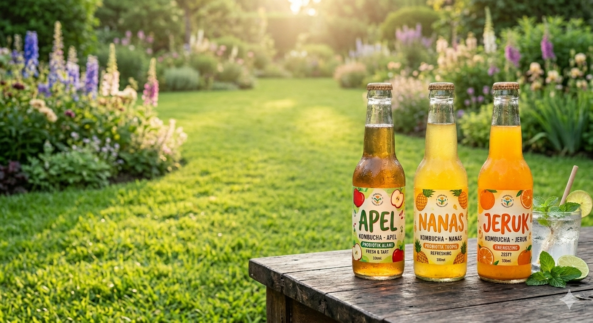
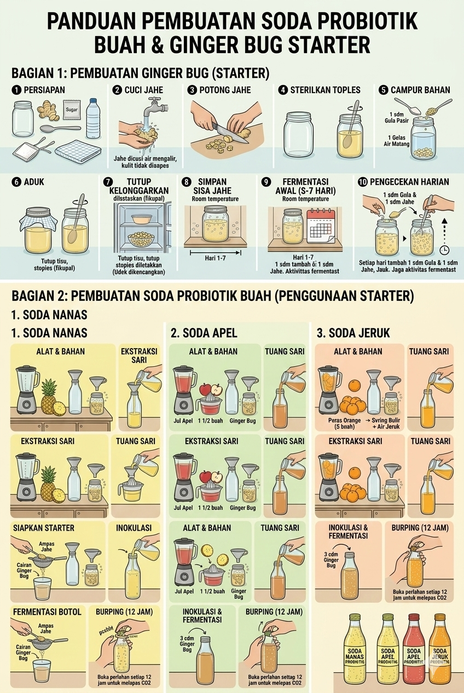

Minuman soda probiotik merupakan minuman berkarbonasi (proses melarutkan gas karbon dioksida ke dalam air) yang dihasilkan melalui proses fermentasi alami oleh bakteri asam laktat dan ragi, yang menghasilkan karbon dioksida serta membentuk keseimbangan rasa manis dan asam secara alami. Soda probiotik adalah minuman yang umumnya berbahan dasar buah organik dan ragi yang kemudian di fermentasi menjadi minuman berkarbonasi alami. Dalam penelitian ini, penulis menggunakan buah apel, jeruk, dan nanas serta memanfaatkan ginger bug sebagai starter dalam proses pembuatan minuman tersebut.
Proses pembuatan ginger bug diawali dengan sterilisasi alat dan penyiapan bahan utama berupa jahe segar, gula pasir, dan air matang. Jahe dicuci bersih di bawah air mengalir tanpa dikupas kulitnya guna mempertahankan mikroorganisme alami yang penting untuk fermentasi, lalu dipotong menjadi bagian-bagian kecil. Langkah awal dimulai dengan mencampurkan satu gelas air matang, satu sendok makan gula, dan satu sendok makan potongan jahe ke dalam stoples kaca steril, kemudian diaduk hingga rata. Stoples tersebut ditutup menggunakan tisu dapur dengan penutup yang diletakkan longgar agar terjadi pertukaran udara yang optimal selama tahap awal. Selama masa fermentasi 5–7 hari pada suhu ruang, ginger bug harus "diberi makan" setiap hari dengan menambahkan masing-masing satu sendok makan jahe dan gula pasir sebagai sumber nutrisi mikroorganisme. Sisa jahe dapat disimpan di lemari pendingin untuk menjaga kesegarannya hingga proses starter ini siap digunakan.
Pembuatan soda probiotik ini dimulai dengan menyiapkan ginger bug sebagai starter alami, yang dibuat dari campuran jahe (dengan kulitnya), gula, dan air yang difermentasi selama 5–7 hari dengan pemberian nutrisi harian. Setelah starter aktif, proses dilanjutkan dengan mengekstraksi sari buah segar sesuai varian: 3 buah nanas atau 1 ½ buah apel menggunakan juicer, sedangkan 5 buah jeruk diperas dan disaring bulirnya. Sari buah tersebut kemudian dimasukkan ke dalam botol kaca steril menggunakan corong, lalu ditambahkan 3 sendok makan cairan ginger bug yang telah disaring sebagai inokulum. Tahap akhir adalah fermentasi botol selama 2 hari pada suhu ruang, di mana pengecekan atau proses burping (membuka tutup botol perlahan) wajib dilakukan setiap 12 jam untuk melepaskan gas karbon dioksida untuk mencegah tekanan berlebih dan memastikan keamanan selama proses karbonasi alami berlangsung.
